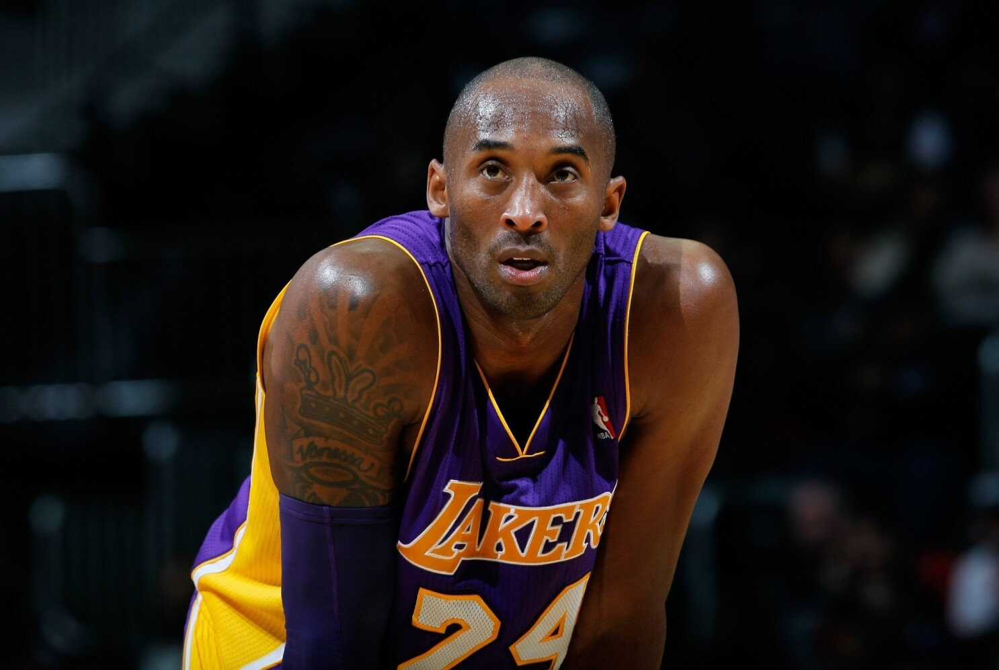

'The Mamba Mentality' simply means trying to be the best version of yourself.
'맘바 멘탈리티는 쉽게 말해서 최고의 모습을 보이기 위해 노력하는 것을 뜻합니다.'
It's a constant quest. It's an infinite quest.
끊임없는 탐색이자 무한한 탐색의 과정입니다.
To me, 'The Mentality' is a really simple one in a sense that the confidence comes from preparation
저에게 '그 정신력'은 굉장히 단순합니다. 제 제신감은 바로 준비과정에서 나옵니다.
독사같은 끈질김으로 매 순간을 임해라. 코비 브라이언트가 스스로에게 붙은 별명인 'Black Mamba'는 오늘날까지 코비를 칭하는 단어가 되었다.
코비에게 있어서 '실패'란 존재하지 않았다. 그에게 실패가 없어서가 아닌, 실패를 신경쓰지 않았기 때문이다. 그는 실패라는 세계 속에서 갇혀 괴로워하지 않고 극복하기 위해서 억겁의 시간을 쏟아붓는 것이 옳다고 말한다.
자신에게 있어서 최고의 모습이 되기 위해 끝없이 노력하는 정신. 그는 그 정신을 Mamba mentality라고 부른다.
1997년 유타와의 서부 플레이오프 컨퍼러스 준결승전 5차전
1승 3패로 레이커스는 탈락 위기였고, 당시 출전시간이 그리 길지도 않았던 신인 코비. 상황은 경기 종료 약 1분전 레이커스의 많은 선수들이 직접 공격을 안하고 서로 슛을 떠밀던 중이었다.
그때 마지막으로 던진 샷, 코비 브라이언트였습니다. 하지만 공이 림에도 맞질 않은 에어볼이었던 것이다. 42초를 남긴 상황에서 3점을 지고 있을때 던진 에어볼. 사람들의 아유가 쏟아졌다. 그 후 경기 종료까지 코비는 슛을 네번 더 던졌는데, 전부 다 마찬가지인 에어볼.
지면 모든 것이 끝나는 이렇게 중요한 상황에서 아무도 슛을 던지지 않을 때 18살 코비 브라이언트는 결승골을 시도했고 결국 레이커스는 플레이오프에서 탈락되었다. 정말 많은 비난을 받은 일화지만
바로 이것이 그 '맘바 멘탈리티'의 시작이었다.
"유타를 상대로 플레이오프 경기를 치렀고 나에게 몇 번의 기회가 있었지만 모두 놓치고 말았다. 연속으로 던진 다섯 번의 슛이 모두 에어볼이 되고 말았다.
패배한 그날 밤 근처 고등학교 체육관에 연습을 하러 갔다. 해가 지고 뜰 때까지 연습하고, 연습하고, 또 연습했다. 그 경험이 나에게 큰 도움이 되었다. 경기장 밖에서 들리는 비판이나 의심들은 나를 이해하기 어렵다. 하지만 가장 중요한 것은 코트에서 골을 집어 넣는 것이다."
"어떤 분야든 계속해서 호기심을 가져야만 한다. 그리고 당신이 진정으로 즐길 수 있는 것을 추구해야한다. 다른 사람들이 어떻게 말하든지 간에."

"실패는 존재하지 않으며, 너의 상상에서 만들어낸 형상일 뿐이야.
역경은 위대한 스승이자 성공할 수 있는 기회다.
나는 매직 존슨의 경기도 봤고, 마이클 조던의 경기도 봤다. 그들의 멋진 플레이를 보고 나 스스로에게 물었다. 저 수준에 도달할 수 있을까?
잘 모르겠지만 한번 해보지 뭐.
나는 더 나은 농구 선수가 되기 위해 모든 것을 배우려고 했다. 그리고 그런 자세를 갖게 되면 말 그대로, 세상은 나의 도서관이 되었다."